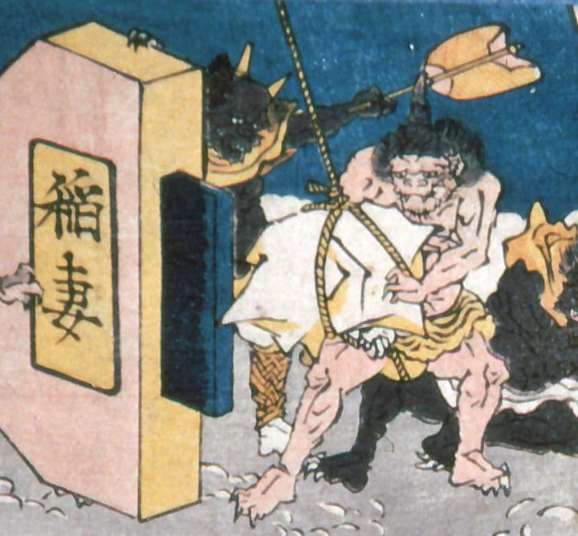

稲妻と書かれた火打ち鎌に、大きな火打石をぶつけようとしている鬼。稲妻を発生させるのであろう。鬼は一角で肌色、黄色い腰巻をつけている。後ろでは軍配を持った黒い鬼がいる。こちらの角は2本である。
著作者：歌川貞重／出典：親書誌：A5_pushkin_0033：教訓三界図会；キョウクンサンガイズエ／日付：2011／資源識別子：A5_pushkin_0033_0002_0000
Copyright (c)2010- International Research Center for Japanese Studies, Kyoto, Japan. All rights reserved.